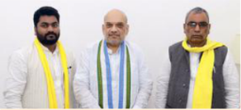

<!DOCTYPE html>
<html lang="en">
<head>
    <link rel="stylesheet" href="a.css">
    <meta charset="UTF-8">
    <meta name="viewport" content="width=device-width, initial-scale=1.0">
    <title>The Hindu - Clone Site</title>
</head>
<body>

    <div>

        <div class="heading">
            <div class="heading1">
                <p class="website">www.thehindu.com</p>
            </div>

            <div class="heading1">
                <p class="dateplace"><strong>MONDAY</strong> <br>July 17, 2023 <br><br><strong>CHENNAI</strong> <BR>CITY EDITION <br>16 Pages <strong>₹5.00</strong></BR></p>
            </div>

            <div class="heading1">
                <h1>THE  HINDU</h1>
                <p class="brand">India's National Newspaper since 1878</p>
            </div>
            
            <div class="heading1">
                <p class="followus"><strong>FOLLOW US</strong> <br>facebook.com/thehindu <br>twitter.com/the_hindu <br>instagram.com/the_hindu <br><br><br><br>  Vol.146  No.168</p>
            </div>
        </div>

        <hr size="2px" noshade>

        <div class="cities">
            <p>Printed at » Chennai » Coimbatore » Bengaluru » Hyderabad » Madurai » Noida » Visakhapatnam » Thiruvananthapuram » Kochi » Vijayawada » Mangaluru » Tiruchirapalli » Kolkata » Hubballi » Mohali » Malappuram » Mumbai » Tirupati » Lucknow » Cuttack » Patna
            </p>
        </div>

        <hr size="2px" noshade>
        <br>

        <div class="headlines">

            <div class="headlines1">
                
                <p><strong><span style="font-size: 10px; color: rgb(213, 1, 1); font-weight: 900;">LOK SABHA POLL ALLIANCE</span> <br>
                    <span style="font-size: 20px;">Rajbhar-led SBSP joins <br>hands with the NDA</span> <br><br>
                    <span style="font-size: 13px;">NEWS » PAGE 11</span></strong>
                </p>
            </div>

            <div class="vertical-line-heading" style="background-color: grey; width: .5px; height: 250px; position: absolute; top: 265px; left: 323px;">
            </div>

            <div class="headlines1">
                
                <p class="a1"><strong><span style="font-size: 10px;">NO COMPENSATION UNDER SDRF </span><br>
                    <span style="font-size: 30px; font-weight: 500;">Lightning not a<br>
                    natural disaster,<br>
                    says Centre</span><br><br><br><br><br>
                    <span style="font-size: 13px;">NEWS » PAGE 12</span></strong></p>                
            </div>

            <div class="vertical-line-heading" style="background-color: grey; width: .5px; height: 250px; position: absolute; top: 265px; left: 596px;">
            </div>

            <div class="headlines1">
                
                <p><strong><span style="font-size: 10px; color: rgb(213, 1, 1); font-weight: 900;">COMMERCIAL MISSION</span> <br>
                    <span style="font-size: 20px;">ISRO to launch PSLV <br>
                    with several satellites</span><br><br>
                    <span style="font-size: 13px;">NEWS » PAGE 12</span></strong>
                </p>                
            </div>

            <div class="vertical-line-heading" style="background-color: grey; width: .5px; height: 250px; position: absolute; top: 265px; left: 868px;">
            </div>

            <div class="headlines1">
                <p class="a2"><strong><span style="font-size: 13px;">WEALTH AND POWER</span> <br>
                    <span style="font-size: 25px; font-family: cursive;"> Conglomerates<br>
                    are getting too<br>
                    big for comfort</span><br>
                    <span style="font-size: 15px; font-family: cursive;">Some are being unduly<br>
                    favoured by the state</span><br><br><br>
                    <span style="font-size: 13px;">EDITORIAL » PAGE 8</span></strong>
                </p>                
            </div>

            <div class="vertical-line-heading" style="background-color: grey; width: .5px; height: 250px; position: absolute; top: 265px; left: 1141px;">
            </div>

            <div class="headlines1">
                
                <p><strong><span style="font-size: 10px; color: rgb(213, 1, 1); font-weight: 900;">TASTING SUCCESS </span><br>
                    <span style="font-size: 20px;">South Zone claims <br>
                    Duleep Trophy</span> <br><br>
                    <span style="font-size: 13px;">SPORTS » PAGE 16</span></strong>
                </p>
            </div>

        </div>    
        <br>
        <hr size="1px" noshade class="hr1">
    </div>

    <div>

        <div class="news">
            <div class="news1">
                <p class="newsa1">No ticket for <br>
                    unpopular <br>
                    candidates, <br>
                    says Chouhan <br>
                </p>

                <p>
                    <span style="text-decoration: underline;">Nistula Hebbar</span><br>
                    BHOPAL
                </p>
                
                <p>Madhya Pradesh Chief Minister Shivraj Singh Chouhan exudes confidence that his government will be able to deal with a local-level anti-incumbency trend in the coming Assembly election by making changes to the candidate list and with a campaign focused on development and welfare programmes. Speaking to The Hindu, Mr. Chouhan, who has served as Chief Minister for nearly 18 years, said the solution to the anti-incumbency trend was to remove candidates who faced it. “This is not an indiscriminate change in candidates, but one done after due assessment,” he said. Mr. Chouhan said he was “confident” that he would be able to overcome the challenge because of the work of his government.
                </p>
                
                <p><span style="font-size: 10px; color: rgb(213, 1, 1); font-weight: 900;">CONTINUED ON</span> <br>
                    » PAGE 10
                </p>
            </div>

            <div class="vertical-line-news" style="background-color: grey; width: 1px; height: 870px; position: relative; left: 12%; top: 25px;">
            </div>

            <div class="news1" style="position: relative; bottom: 920px; left: 13%;  float: left; width: 46%;">
                <p class="newsa2">Govt. sets up new panel to review all NSO data
                </p>

                <p> <span style="text-decoration: underline;">It replaces a committee which examined economic datasets only;</span> move follows sharp critiques of India's statistical machinery; new panel to advise govt. on surveys, identify and plug data gaps.
                </p>

                <p><strong><span style="text-decoration: underline;">Vikas Dhoot</span></strong> <br>
                    <span style="font-size: 12px;">NEW DELHI</span>
                </p>

                <p  style="position:absolute; width: 22%; top: 290px;" ><span style="font-size: 70px;">T</span><span style="position:absolute; top: 15px; width: 60%; ">he Union government has internal</span> </p> <span style="position:absolute; top: 15px; width: 24.5%; top: 375px;"> oversight mechanism for official data, revamping a Standing Committee on Economic Statistics (SCES) set up in late 2019, soon after the findings from the last round of household surveys consumption expenditure and employment were junked over “data quality issues”. In an order issued last Thursday, the Statistics Ministry said that the SCES, which was tasked with examining economic indicators only, will now be replaced by a Standing Committee on Statistics (SCoS) which has a broader mandate to review the framework and results of all surveys conducted under the aegis of the National Statistical Office (NSO).</span> 
                    <span style="position:absolute; top: 578px; left: 26.5%; width: 24%;"> Pronab Sen, former Chairman of the National Statistical Commission (NSC), has been named the chair of the new panel. <br><br> <strong>'System overhaul'</strong><br>The SCoS — with “enhanced terms of reference” visavis the SCES, “to ensure more coverage” — has 10 official members, and four non-official members who are eminent academics. It can have up to 16 members, as per the order</span> 
                    <span style="position:absolute; top: 578px; left: 53%; width: 22%;">issued by the Ministry of Statistics and Programme Implementation. The development comes amid sharp critiques of India's statistical machinery by members of the Economic Advisory Council to the Prime Minister, including its chairperson Bibek Debroy. He had mooted an overhaul of the system, and contended Indian Statistical Service has “little expertise in survey design”.</span>
                </p>

                <p style="position:absolute; width: 24.5%; top: 251px; left: 78%;">“The term of the SCES
                    was coming to an end in
                    any case, so it was decided
                    to expand the committee's
                    mandate beyond economic data and advise the Ministry on technical aspects
                    for all surveys, such as
                    sampling frame, design,
                    survey methodology and
                    finalisation of results,” an
                    official said.
                    Apart from addressing
                    issues raised from time to
                    time on the subject, results
                    and methodology for all
                    surveys, the terms of reference of the SCoS include
                    identification of data gaps
                    that need to be filled by official statistics, along with a
                    strategy to plug those gaps.
                    It has been mandated to
                    explore the use of administrative statistics to improve
                    data outcomes. While the
                    panel will help finalise survey results, the NSC will
                    have the ultimate authority
                    to approve the publication
                    of those results.
                </p>
            </div>

            <div class="div1">
                <p class="line1"></p>
                <p class="p1">Revisiting the numbers</p>
                <p class="p2">The new standing Committee on Statistics has a broader mandate to review framework and results of all NSO surveys.</p>
                <p class="p3">The panel replaces the Standing Committee on Economic Statistics set up in 2019 after the findings from the last round  of household 
                    surveyson consumption expenditure and employement were junked, citing 'data quality issues'.
                </p>
                <p class="line2"></p>
                <p class="p4">Its terms of reference include finalisation of survey results, better use of administrative datas.</p>
                <p class="line3"></p>
                <p class="p5">Apart from survey design improvements, ScoS will identify data gaps and strategies to plug them.</p>
                <p class="line4"></p>
            </div>

            <div class="vertical-line-news" style="background-color: grey; width: 1px; height: 870px; position: absolute; left: 60%; top: 595px;"></div>
            
            <div>
                <hr class="hr2">
            </div>
        
        </div>

    </div>
</body>
</html>